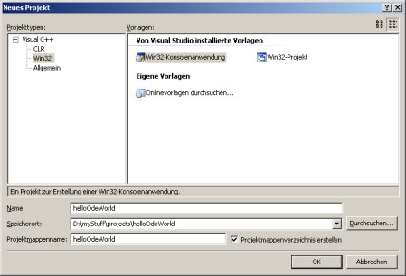
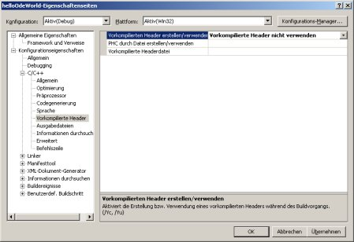
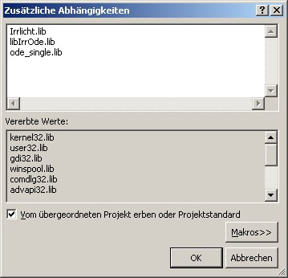
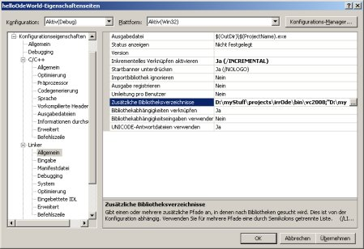
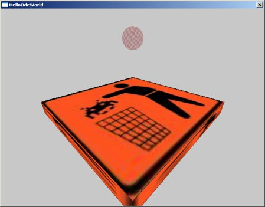

Step 1: setting up the project
Use the VisualC++ project creation wizard and create a commandline project.

Remove all files except "helloOdeWorld.cpp" from the project. These files are not needed. Now go to the "project options" wizard. Set the "use precomiled headers" option to "don't use precompiled headers"

Next go to the "Linker" options in the project properties. Add the libs "Irrlicht.lib", "libIrrOde.lib" and "ode_singe.lib" to the list

Now add the directories of the libs added in the previous step to the linker options. These are "<Irrlicht Directory>/lib\Win32-visualstudio", "<ODE Directory>lib\ReleaseSingleDLL" and "<IrrOde Directory>/bin\vc2008"

Next go to the "C/C++ -> general" tab and add "<Irrlicht Directory>/include", "<ODE Directory>/include" and "<IrrOde Directory>/include/IrrOde".

After this replace the code generated by the wizard in the "helloOdeWorld.cpp" file by the following lines:
#include <irrlicht.h>
#include <IrrODE.h>
using namespace irr;
using namespace core;
using namespace scene;
using namespace video;
using namespace io;
using namespace gui;
using namespace ode; //This is the namespace of all IrrODE stuff
int main(int argc, char** argv) {
IrrlichtDevice *device=createDevice(EDT_DIRECT3D9,dimension2d(640,480),
16,false,false,false,0);
device->setWindowCaption(L"HelloOdeWorld");
IVideoDriver* driver = device->getVideoDriver();
ISceneManager* smgr = device->getSceneManager();
IGUIEnvironment* guienv = device->getGUIEnvironment();
while(device->run()) {
driver->beginScene(true, true, SColor(0,200,200,200));
smgr->drawAll();
guienv->drawAll();
driver->endScene();
}
device->drop();
return 0;
}
Now you have to copy the files "Irrlicht.dll" and "ode_single.dll" to the directory where the executable was
created and IrrOde's "data" folder to the same place. Your project should now compile and run. You'll get an
impressive gray screen.Step 2: initialize IrrOde:
The first thing to do for initializing IrrODE is to register an instance of the CIrrOdeSceneNodeFactory.
CIrrOdeSceneNodeFactory cFactory(smgr); smgr->registerSceneNodeFactory(&cFactory);With this scene node factory you can add all IrrOde scenenodes using the scenemanager. We'll see that later on.
Next we init ODE using the singleton instance of the CIrrOdeMananger and set a timer. This timer will do all the timing things for us, but we need to set it because the program would crash without a timer.
//init the ODE CIrrOdeManager::getSharedInstance()->initODE(); //set IrrODE's timer ITimer *pTimer=device->getTimer(); CIrrOdeManager::getSharedInstance()->setTimer(pTimer);
Step 3: create an IrrODE scene
Now for the ODE specific scenenodes: the first scene node to add is a CIrrOdeWorld. This is the IrrODE version of ODE's dWorld. All nodes of the dynamic world need to be children of this world node. Don't be confused by the "nodeNameToC8" method. I used widestrings to store the scene node names, mainly to display them in the IrrOdePlayground application, but as the scenemanager needs the names as c8-strings I convert them using a method in the CIrrOdeSceneNode base class.
ISceneNode *pNode=smgr->addSceneNode(
CIrrOdeSceneNode::nodeNameToC8(IRR_ODE_WORLD_NAME),
smgr->getRootSceneNode());
CIrrOdeWorld *worldNode=reinterpret_cast<CIrrOdeWorld *>(pNode);
As we want a sphere bouncing off a box in this demo we need to add gravity to the world node
worldNode->setGravity(vector3df(0,-10,0));Now let's add the node for the box where the sphere will bounce off when the program is finished. Please note that the AnimatedMeshSceneNode is a child of the worldNode.
IAnimatedMesh *Mesh=smgr->getMesh("data/box.3ds");
IAnimatedMeshSceneNode *Node=smgr->addAnimatedMeshSceneNode(Mesh,worldNode);
Node->setMaterialTexture(0,driver->getTexture("data/box0.jpg"));
Node->setScale(vector3df(15.0f,1.5f,15.0f));
Node->setMaterialFlag(EMF_LIGHTING,false);
Now for the node that makes the box a static object. We use the Irrlicht scenemanager to add a CIrrOdeGeomBox scene node as child
of the previously added box. Next we set some surface parameters, we want the surface to be bouncy.
CIrrOdeGeomBox *bx=reinterpret_cast<CIrrOdeGeomBox *>(smgr->addSceneNode(
CIrrOdeSceneNode::nodeNameToC8(IRR_ODE_GEOM_BOX_NAME),
Node));
bx->getSurfaceParameters()->setBounce(1.0f);
bx->getSurfaceParameters()->setModeBounce(true);
bx->drop();
The next object we add is the sphere that drops on the box. As this should not be a static object we add a CIrrOdeBody
object first, then the AnimatedMeshSceneNode as child of the body and (last but not least) a CIrrOdeGeomSphere object as
child of the child of the body. The surface parameters of the geom will (again) be set to bouncy.
//first add a body as child of the worldNode
CIrrOdeBody *pBody=reinterpret_cast<CIrrOdeBody *>(
smgr->addSceneNode(CIrrOdeSceneNode::nodeNameToC8(
IRR_ODE_BODY_NAME),worldNode));
pBody->setPosition(vector3df(0.0f,15.0f,0.0f));
//next load a mesh and add an AnimatedMeshSceneNode
//as child of the body
Mesh=smgr->getMesh("data/sphere.3ds");
Node=smgr->addAnimatedMeshSceneNode(Mesh,pBody);
Node->setMaterialTexture(0,driver->getTexture("data/sphere0.jpg"));
Node->setMaterialFlag(EMF_LIGHTING,false);
//as the last part we add a sphere geom as child of the
//AnimatedMeshSceneNode
CIrrOdeGeomSphere *pSphere=reinterpret_cast<CIrrOdeGeomSphere *>
(smgr->addSceneNode(CIrrOdeSceneNode::nodeNameToC8(
IRR_ODE_GEOM_SPHERE_NAME),Node));
pSphere->setMassTotal(0.5f);
pSphere->getSurfaceParameters()->setBounce(1.0f);
pSphere->getSurfaceParameters()->setModeBounce(true);
pSphere->drop();
In order to make IrrOde initialize the physics entities of the objects we have added until now we tell the worldNode to do so.
worldNode->initPhysics();Note that when adding objects to the world during runtime you do also have to call the "initPhysics" method of the object. If you do e.g. call the method of a CIrrOdeBody object it will also init the physics of all it's children so there is not need to manually call all these methods.
Before we can see anything we need to add a camera to the scene, set it to an apropriate position and make it face the scene and we start the timer.
ICameraSceneNode *cam=smgr->addCameraSceneNode(); cam->setPosition(vector3df(-20.0f, 15.0f, -20.0f)); cam->setTarget(vector3df(0.0f,0.0f,0.0f)); while (pTimer->isStopped()) pTimer->start();The final thing to do is to adjust the main loop of the program so that our world get steped in each frame. Please note that the default IrrODE rate is 60fps (0.016s/step), so that even if your computer makes a higher framerate IrrODE will automatically get the physic's rate down to that value. Please read the ODE wiki on their homepage on why it is important to have a constant time step value and all other information you may want to have.
while(device->run()) {
CIrrOdeManager::getSharedInstance()->step();
driver->beginScene(true, true, SColor(0,200,200,200));
smgr->drawAll();
guienv->drawAll();
driver->endScene();
}
After all this hard and dirty work you can finally compile and run your first IrrODE application.